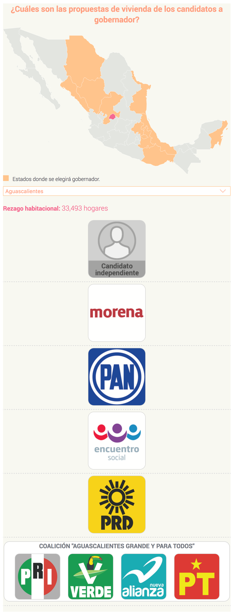
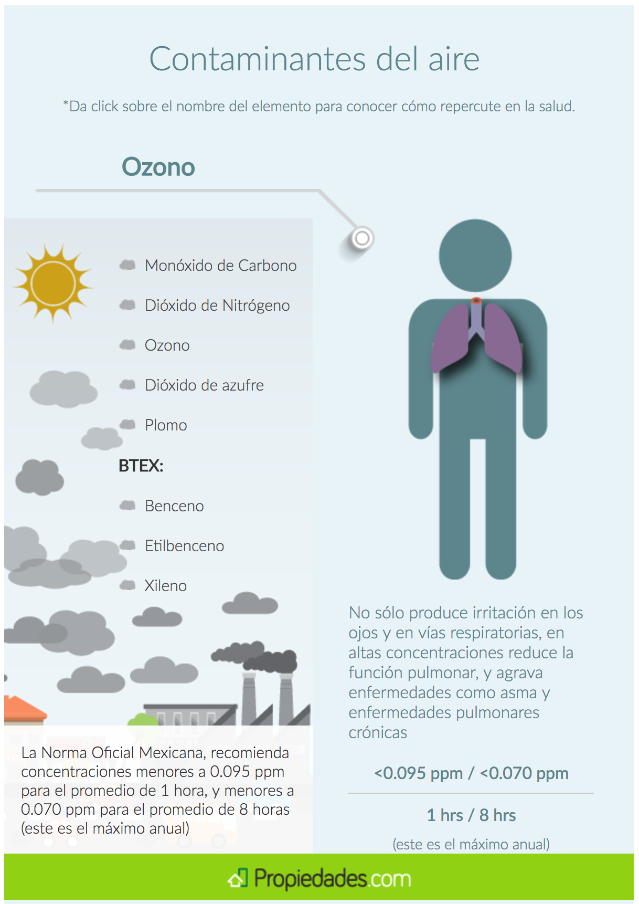
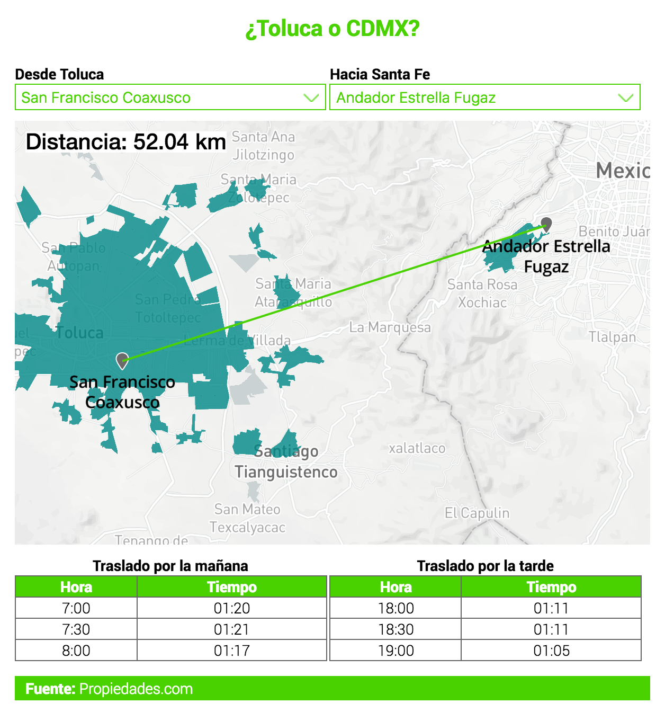
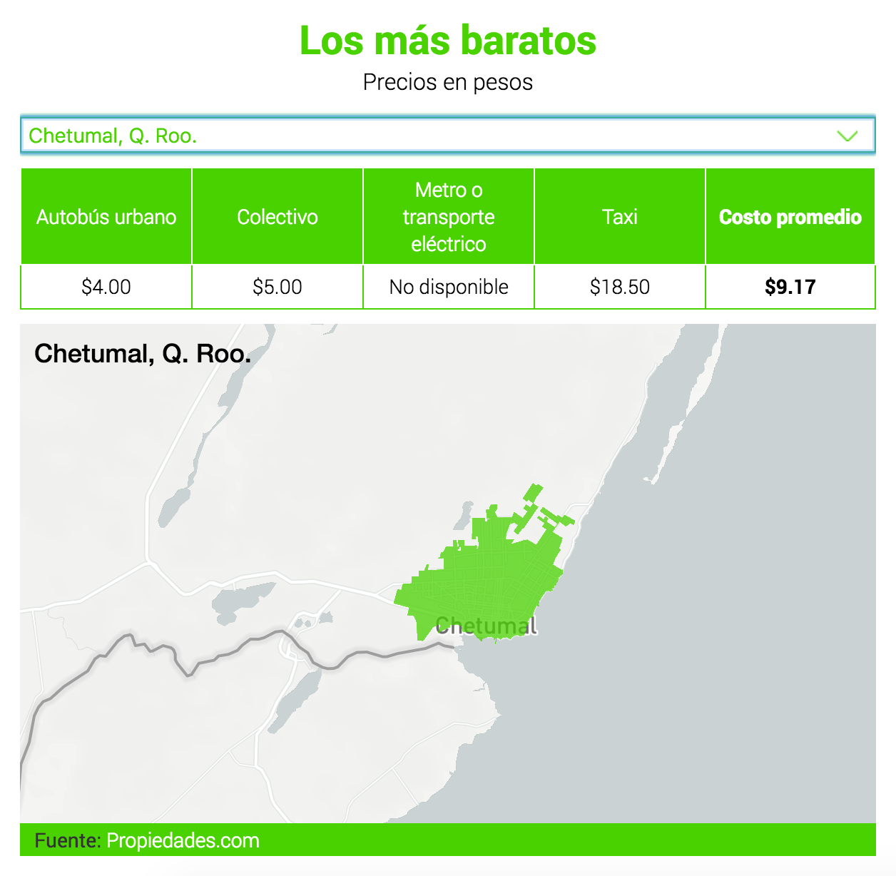
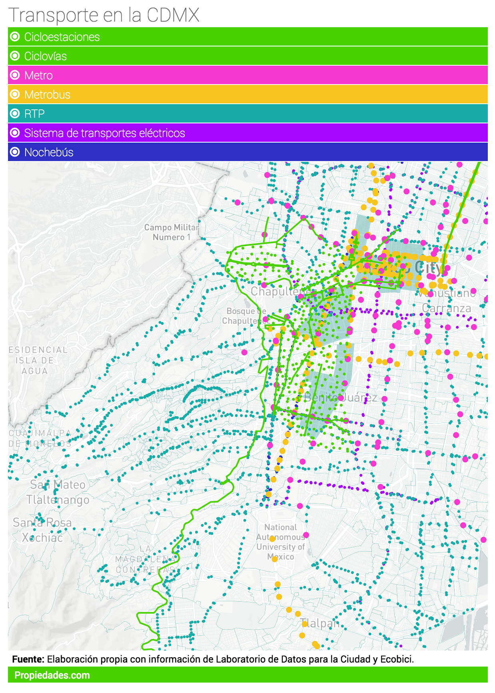
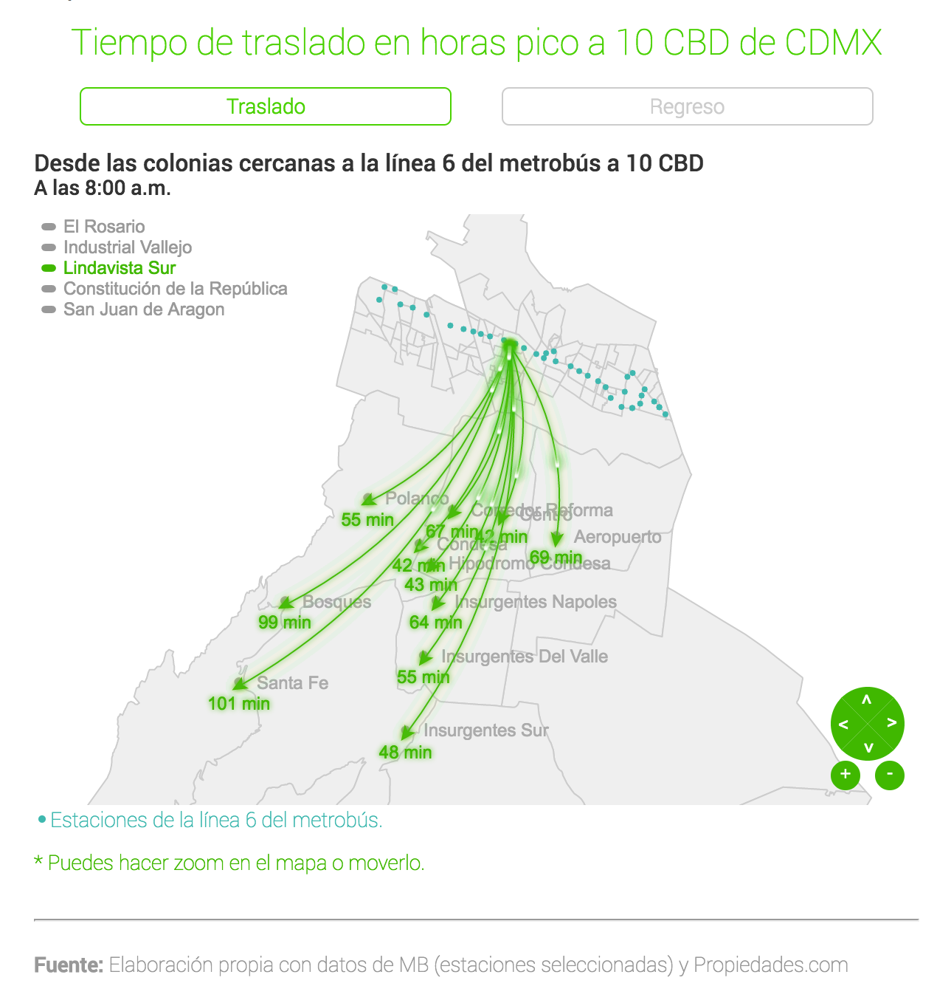
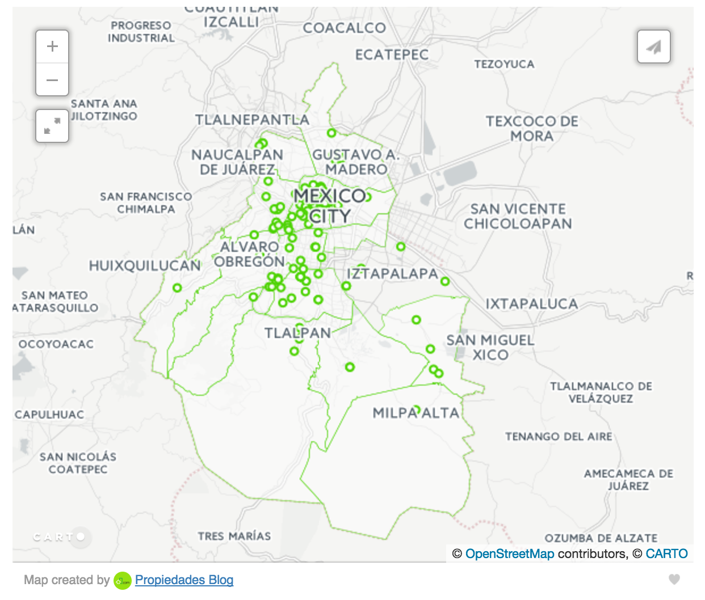
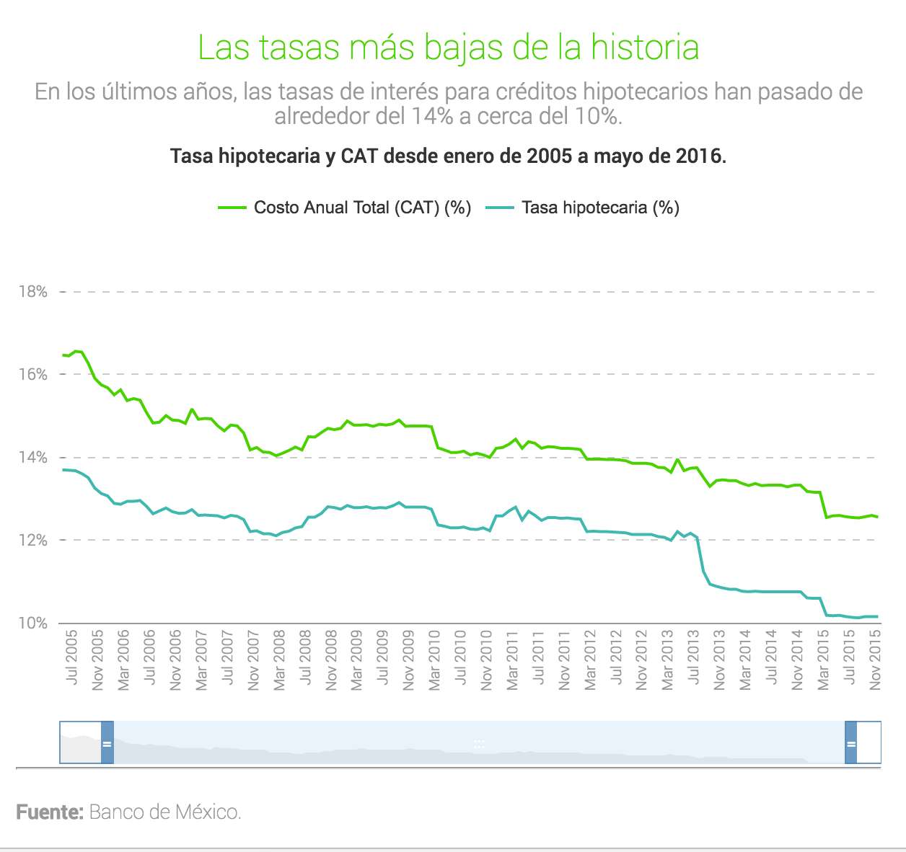
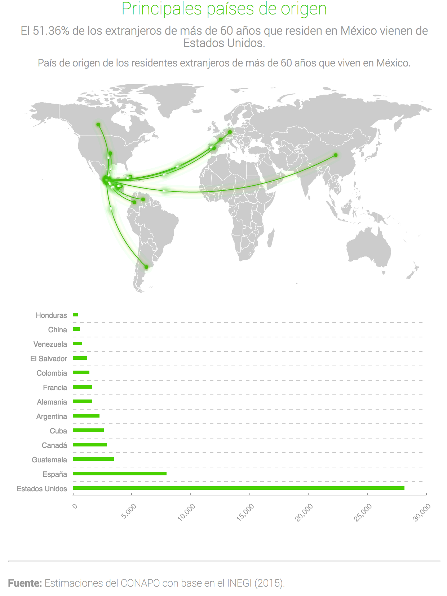
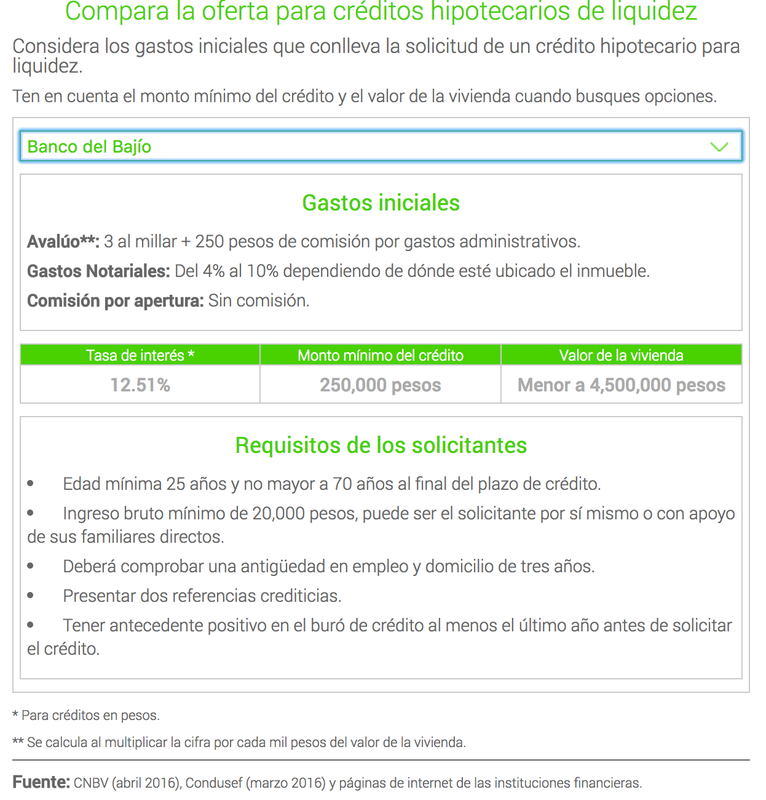

Estos son algunos proyectos en los que he participado:
Interactivos:
-
Adiós Distrito Federal. Hola, nueva constitución de la Ciudad de México
Propiedades.com/Blog
HTML, CSS y JS
Perfil de los constituyentes de la CDMX -

¿Cuáles son las propuestas de vivienda de los candidatos ...
Propiedades.com/Blog
HTML, CSS y JS
Trayectoria y propuestas por estado y partido político. -

La contaminación ambiental en la Ciudad de México ...
Propiedades.com/Blog
HTML, CSS y JS
¿Cómo afectan los contaminantes al cuerpo?
Mapas:
-

Si trabajas en Santa Fe, ¿te conviene vivir en Toluca?
Propiedades.com/Blog
Mapbox + JS
Distancias y tiempos de traslado entre puntos de Toluca y Santa Fe. -

Las 10 ciudades con el transporte público más barato
Propiedades.com/Blog
Mapbox + JS
Ubicación de las ciudades y el costo de los diferentes medios de transporte. -

10 colonias para "librar" el gasolinazo
Propiedades.com/Blog
Mapbox + JS
Ubicación del transporte público en CDMX. -

Las 10 colonias más pet-friendly de la CDMX
Propiedades.com/Blog
Mapbox Studio
Ubicación de los negocios y áreas de interés para los dueños de mascotas. -

¿Cómo cambia una colonia con una línea de metrobús?
Propiedades.com/Blog
Echarts
Tiempos de traslado desde colonias cercanas a la línea 6 del metrobús a centros de trabajo. -

¿Cuauhtémoc, la delegación con más museos en CDMX
Propiedades.com/Blog
Carto DB
Geolocalización de los 170 museos de la CDMX.
Gráficas y tablas:
-

¿Quieres comprar casa? Éste es buen momento
Propiedades.com/Blog
Echarts
Histórico de tasa hipotecaria y costo anual total. -

¿En qué lugares de México viven los extranjeros retirados?
Propiedades.com/Blog
Echarts
Paises de origen y población. -

Compara la oferta para créditos hipotecarios de liquidez
Propiedades.com/Blog
HTML, CSS y JS
Tabla comparativa entre bancos.